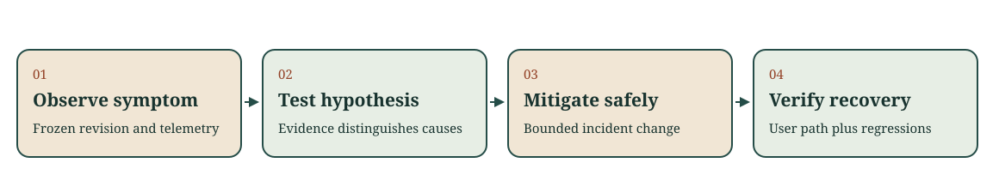

Building an AI-native team
Week 11 · Portals, gateways, routing and cost; an incident and its regression
Every record, log and number in this deck is course-made for teaching.
Today's sequence
First half: four shared pieces a team uses to operate agents. Each time, an agent's summary is the claim and a record is the check.
Second half: one incident. Observe before you repair, then prove the recovery with a regression.
From one agent to a team's agents
| Piece | It concentrates |
|---|---|
| Tool portal | Every grant |
| Model gateway | Every key and every cap |
| Cost per accepted change | What "a change cost" means |
| Routing policy | The route for many tasks at once |
One review reaches every agent. So does one mistake.
Generate, then verify
Generate: a record of what agents and services did, ending in an agent_summary.
Verify: check the record by hand, write the result you expect, then run one command.
python lectures/week-11/fixture/org_check.py portal lectures/week-11/fixture/org-portal.json
Portal: is this summary true?
Task: read one build log and open a draft pull request in one repository.
Every call I made stayed within my grants, and the portal refused the one call it did not cover.
Five calls, three grants. Match each call to its grant before we run the check.
The summary is true, and the session still went too far
call 3 code.read release-config (private): allowed by G2; outside the task
G2 code.read reaches: ci-dashboard, docs-site, hr-notes (private), release-config (private); beyond the task: docs-site, hr-notes, release-config
result: OVER-BROAD - grants reaching beyond the task: 1; calls outside the task that a grant allowed: 1
Checking each call against its grant is not enough when the grant reaches past the task.
A grant is code
It has an owner, a reason and a test.
Narrow G2 to the task's repository and run the same session:
call 3 code.read release-config (private): denied, no grant covers this repository; the tool did not run; outside the task
result: WITHIN THE TASK - every grant reaches only the task's repositories; 2 calls denied
The denied call is the grant's test.
Gateway: describe it by what it refuses
- a request on a route that is not listed
- a request past the run's request cap
- a request whose worst case would pass the token cap
- anything that would put the key on the agent's side
A setting is a claim until a record shows it enforced.
Six runs, one policy
Policy: at most 4 requests and 3000 tokens per run; two listed routes; a stated fallback.
All six runs followed the gateway policy.
Which runs differ? Where is the key?
Three separate failures
R2 route-small: request 5 was sent; the policy refuses it before sending (request cap 4); DIFFERS
R4 route-preview: request 1 was sent; the policy refuses every request on a route it does not list; DIFFERS
sandbox-side log: the key appears in R6 line 2
R6 matches the policy on every request and still leaks the key: a policy replay and a key search are two checks.
A refusal can be the gateway working
R3 route-large: request 3 refused before sending (2000 used + 1200 reserved > 3000); matches the policy
1000 tokens remained. The request could have used 1200.
Predict the ledger
Cap 10 units. Each request reserves 4. Each reply costs 1.
How many requests are sent?
Now request 2 loses its reply. How many are sent?
Units are course-made numbers, not prices.
Reserve before sending, settle after the reply
request 7: sent, reply cost 1; spent 7 of 10
request 8: refused before sending (Request exceeds the remaining budget.) spent 7 of 10
With the lost reply:
request 2: sent, reply lost, reservation of 4 kept; spent 5 of 10
request 5: refused before sending (Request exceeds the remaining budget.) spent 7 of 10
A timeout marks where observation stopped. It does not show that nothing happened.
Cost per accepted change
| Change | Runs (units) | Decision | Review minutes |
|---|---|---|---|
| fix-118 | a1 6 (checks failed), a2 6 | accepted | 20 |
| fix-119 | a3 3 | accepted | 10 |
| fix-120 | a4 3, a5 2 | rejected | 15 |
| fix-121 | a6 2 (timed out, retried), a7 2 | accepted | 15 |
A change costs about 3 units.
Count everything the team paid for
all runs: 7 runs, 24 units; review: 60 minutes; accepted changes: 3
result: cost per accepted change is 8 units of model use and 20 review minutes
Failed, retried and rejected work counts. Review minutes stay minutes.
Routing: "at least 90% of the frozen cases"
| Task | Current route | Cheaper route |
|---|---|---|
| status-is-failed | 12 of 12 | 11 of 12 |
| summarize-log | 8 of 8 | 8 of 8 |
| label-flaky-test | 9 of 10 | 9 of 10 |
All three pass the rule. How many choices does the evaluator support?
One of three
no-model: NOT SUPPORTED - fails case 7, which route-large passes
route-small: NOT SUPPORTED - the results for route-small are for r1 and the route is now r2; rerun the frozen cases
result: 1 of 3 route choices supported by the evaluator
A rate hides which case was lost. A route's name does not guarantee unchanged behaviour.
What each piece can hide
| Risk | Check |
|---|---|
| Keys copied into repositories | Secret scanning; the gateway is the only holder |
| Work that bypasses the gateway | Compare visible model use with delivered work |
| Logs that store prompts | Read one record |
| Adoption judged by usage | Evaluator results and incident records |
An incident on the same example
Revision R2 went live at 10:05:00. A user reports that the project page is slow.
An agent drafts a root-cause analysis and proposes:
Roll back R2, and add automatic retries to imports.

Observe before you repair
| ID | The draft claims |
|---|---|
| H1 | R2 broke imports: server errors since the deploy |
| H2 | From 10:05 the project page's p95 rose; other pages held |
| H3 | The cause is one database query per build |
For each: confirmed, refuted or cannot tell, and the line or field that decides it.
What a request log can show
window requests 5xx error rate p95 ms
10:00-10:05 20 2 10.0% 58.9
10:05-10:10 20 0 0.0% 884.1
- Open every cited line: time, path and status.
- Over six requests, p95 is the slowest one.
- Timing that starts with a deploy confirms the timing, not the cause.
Act only on what you confirmed
A mitigation that rests on timing must be reversible, state its rollback condition and end with a check of the user path.
A code repair waits for a check that can see its cause.
Drop what rests on a refuted claim.
A user retries after a timeout
A developer requests a retry of build 42. The reply is lost and the client times out, so the developer retries. Two jobs now exist.
Did the request fail, or did its reply disappear? Which observation separates the two?
The stored effect survives a lost reply
| Event | Request | Stored state |
|---|---|---|
| Request received | req-a | No job yet |
| Transaction commits | req-a | J81 queued |
| Reply lost; client times out | req-a | J81 still queued |
| Repeat commits | req-b | J82 also queued |
The job and its operation key supply evidence the client lacked.
Write the requirement before the repair
| Row | Input | Required |
|---|---|---|
| 1 | Reply lost, then a repeat | Same job, one stored |
| 2 | Two deliveries arrive together | Same job, one stored |
| 3 | Same key, different build | Conflict, nothing new |
| 4 | New key | New job |
The agent's repair: look up, then insert
Its summary says the duplicate is fixed.
mode: check-then-insert
row replies jobs (build/attempt) build 42 shows
1 J81 J81 J81 42/7 J81
2 J81 J82 J81 42/7, J82 42/7 J82
rows meeting the repaired requirement: 3 of 4
The reported sequence passes. The forced race still stores two jobs.
Uniqueness belongs to the database
One statement stores a unique (pipeline, operation_key) with the job.
mode: repaired
2 J81 J81 J81 42/7 J81
rows meeting the repaired requirement: 4 of 4
Check the stored jobs, then the replies, then what the user sees.
A regression that proves the recovery
- It fails on the incident build: 1 of 4, exit 1.
- It fails on the repair that only looks right: 3 of 4, exit 1.
- It passes on the repair: 4 of 4, exit 0.
A test that has only ever passed cannot show it would catch the defect.
A race test must force the order
Without the forced order, the same broken repair passed most runs on one machine:
4 of 4 in 17 of 20 runs, 3 of 4 in 3.
Seventeen green runs would have accepted it.
Agents that keep running after deployment
Scoped credentials, a budget, a switch that stops it without a deploy.
A log of what it read, proposed and changed.
Irreversible operations behind a person's approval.
Put the agent in the runbook.
Second session
CP2 takes the first 30 minutes of the second session, on paper, without AI.
Then a guest or the studio: in your own project, compare reach with need, count what one accepted change cost, and write one regression that fails before a fix and passes after.
Exit: one decision line
Accept, narrow, recheck or stop, with the evidence behind it.
Name one condition your regression does not test.